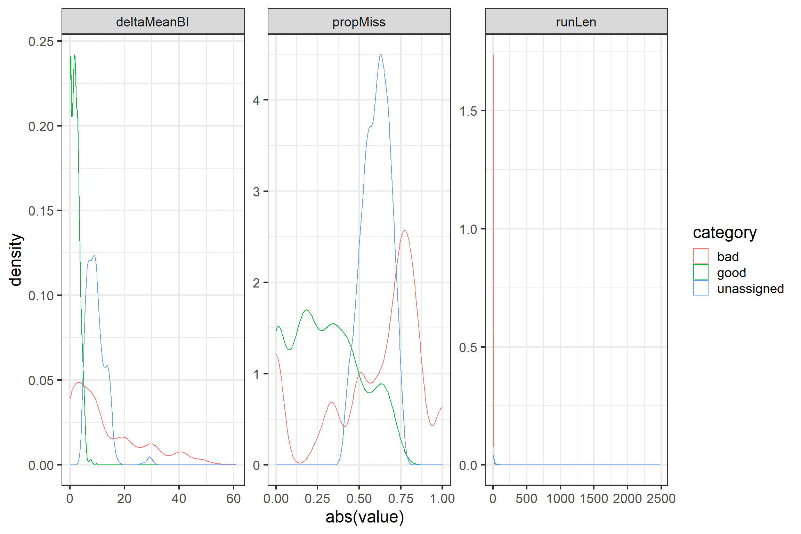
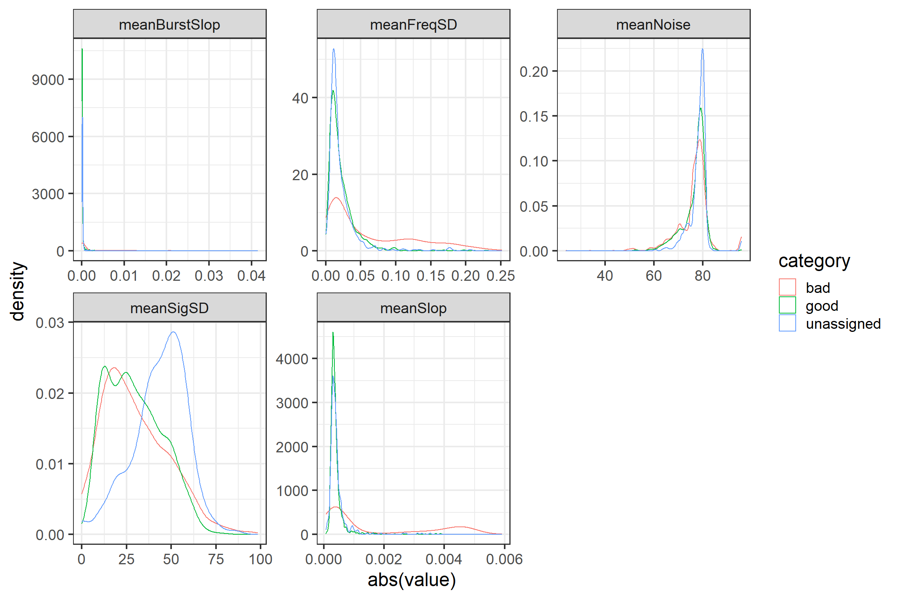
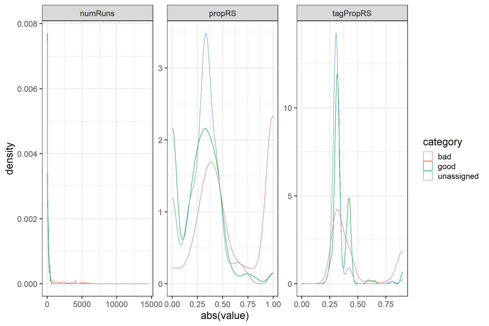
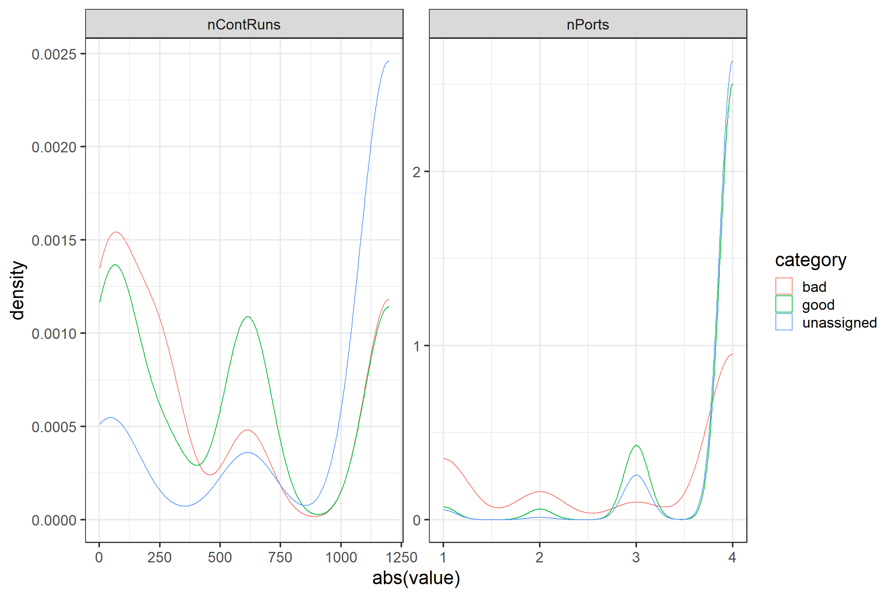
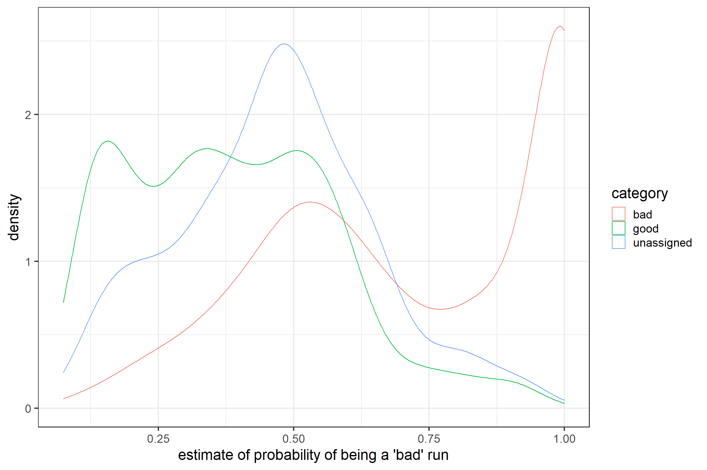
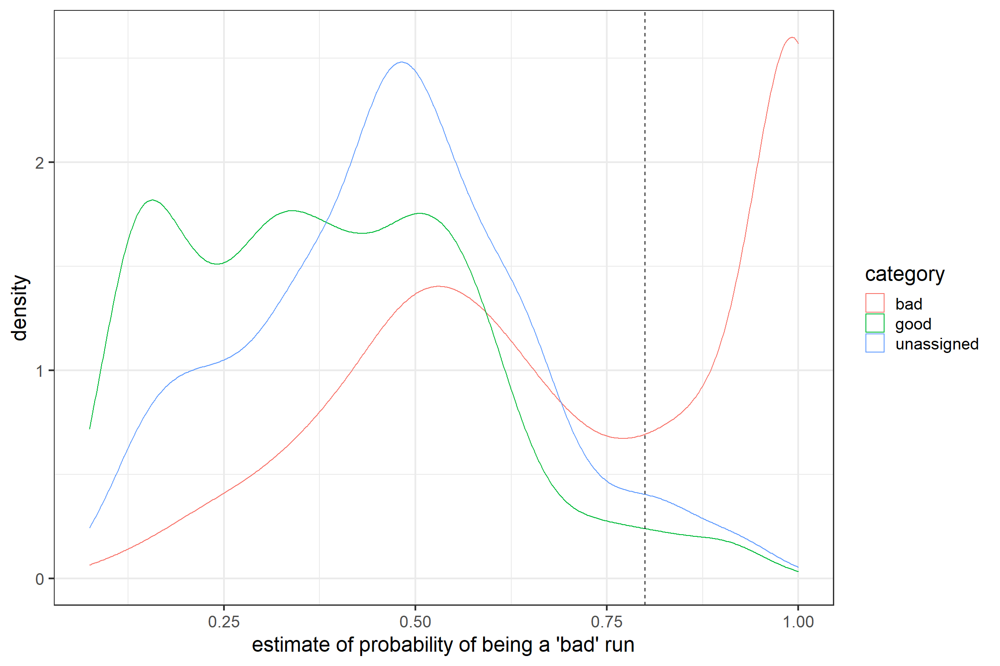

9 A tool to identify probable false positive detections
This chapter was contributed by Bianca Michalik, Amie MacDonald, and Philip Taylor.
9.1 Introduction
As outlined in Chapter 5, there are several factors that might lead to false detections of your tags in your datasets. One type of these false detections are so called false positives, which can arise from other sources of electromagnetic pulses in the surroundings of receiving antennas. False positives are liberally allowed for during automated tag filtering at Motus to minimize the risk of missing any real detections. Therefore, we generally recommend you use the tools provided in section 5.3 to validate your data and to decide individually if a detection is valid in a biological context. However, this approach can be quite time consuming, especially when you are fortunate enough to have deployed lots of tags and consequently, you have a huge dataset. Furthermore, it can sometimes be critical to formulate exactly the conditions under which you might have excluded a detection from your further analyses if you did this by visual inspection of diagnostic plots.
The goal of this chapter is to provide a tool to automatically predict the probability of a detection of being a false positive. The concept of our approach is quite simple: first, we want to use a subset of detection data from a solid a priori classification of detections either being ‘good’ or ‘bad’. In the second step, we want to identify potential diagnostic physical parameters provided in the Motus alltags table (please see Appendix A for a detailed description of variables) to characterize the quality of a detection. Third, we run a logistic regression model with these parameters in order to predict the probability of each detection being a ‘bad’ detection for all of your detection data. Finally, you can use the probability estimates provided from the model to define a threshold for filtering your data. Of course, it is generally necessary to re-evaluate the outcome of this process in a biological context.
While this chapter primarily applies to detection of Lotek nanotags, detections from Cellular Tracking Technologies (CTT) PowerTags and LifeTags are also subject to false detections. Because the properties and the processing of the data are quite distinct, the topic of false detections in CTT tags will be covered in a different chapter at a later time. However, some of the principles explained here will apply to both types of tags, particularly the idea that longer, uninterrupted sequences of bursts matching the expected burst period will have a higher probability of being true detections.
9.2 Step 1 – Classification of detections
False positives resulting from random radio noise are often characterized by three simultaneously occurring features. First, the run lengths of these false detections are typically quite short. A ‘run’ is a series of consecutive bursts of a given tag detected by the same antenna at the same receiver. Short run lengths mean that only a few recorded consecutive bursts are identified to match a specific tag. This feature arises from simple probability statistics: in a series of random pulses it is more likely to find the specific signal pattern of a tag only by chance if that pattern is short, which is usually the case in most of the tags registered with Motus. The detection probability of a deployed tag also depends on its burst interval meaning that longer burst intervals have a lower probability of being detected. Tags with long burst intervals thus tend to be recorded less often as the animal moves ‘out of the beam’ of the recording antenna. Tags with short burst intervals, in turn, tend to be recorded with a longer run length, therefore bearing higher probabilities of being a false positive with a long run length.
The second common feature of false detections is that within a run a lot of bursts are missed. During the process of automated tag filtering up to 60 bursts can be missed without the run being terminated for the identified tag. This makes biological sense as the detection probability of a tag deployed on a moving animal also depends on the structure and type of the landscape, the orientation of the antenna of the tag as well as on the distance and height the animal is moving relative to the recording antenna. If the animal drops in height, vanishes behind a structure or if it quickly turns its body axis, recordings of the tag can be interrupted, i.e. bursts can be missed. Recordings with a very high amount of missed bursts, however, might be less trustworthy.
The third feature is that the time intervals of the recorded bursts might not properly match the time intervals as specified by the manufacturer and recorded during tag registration. For technical reasons, there is a certain offset allowed for during automated tag filtering at Motus (+/-4 ms), indicated in the alltags variable slop (see Appendix A for detailed explanation of variables). The variable burstSlop is the signed time offset of a recorded burst relative to its expected position in the recorded time sequence based on the tag registration burst interval which allows for bursts to be missed. If you calculate ‘measured’ burst intervals between two subsequently recorded bursts of the same tag, i.e. ignoring missed bursts, they sometimes deviate widely from the burst interval as specified by the manufacturer and tag registration. These deviations can arise from accumulations of time offsets which would otherwise be neglected if missed bursts were accounted for. This means, small burstSlops sometimes might suggest better recordings of a tag than they really are.
As pointed out, none of the three common features of false positives described above can alone describe the quality of a detection. We thus want to use all three of them to classify our detection dataset a priori into ‘good’ and ‘bad’ detections.
# set system environment time zone to GMT
Sys.setenv(tz="GMT")
# load required packages
library(motus)
library(rms)
library(ggplot2)
library(dplyr)
library(lubridate)
# set base theme for plots
theme_set(theme_bw(base_size = 18))
### download sample data from James Bay Shorebird Project #176
# note: if you haven't downloaded sample dataset before, use 'new = T'
# specify 'dir =' to save elsewhere than working directory
db <- tagme(176, new = F, update = F, forceMeta = F, dir = "./data/")
t <- tbl(db, "alltags")
df <- t %>%
select(hitID, runID, ts, sig, sigsd, noise, freq, freqsd, slop, burstSlop, # select variables
motusTagID, port, runLen, tagModel, tagBI, tagDeployID,
deviceID, recvDeployID, recvDeployLat, recvDeployLon, recv, recvSiteName) %>%
arrange(motusTagID, ts) %>% # order data frame
collect %>% as.data.frame %>% # convert into flat data frame
mutate(ts = as.POSIXct(ts, origin="1970-01-01 00:00:00", tz="GMT")) %>% # convert ts into readable format
distinct()
rm(t)
# find duplicated runIDs (duplicates in ts, motusTagID, port, recv)
# note, there are no duplicates in the sample dataset!
# runsDup <- df %>%
# filter(duplicated(cbind(ts, motusTagID, port, recv))==T) %>%
# select(runID)
#
# filter data (remove runs with duplicates)
# df <- df %>% filter(!(runID %in% runsDup$runID))
#
# rm(runsDup)Since we want to consider each detection within its recorded time frame, we calculate features 2 and 3 for each run individually.
##### Step 1 - Classification of detections
### calculate features 2 and 3 for each run
runFeat <- df %>%
group_by(runID) %>%
mutate(duration = as.numeric(difftime(max(ts), min(ts), units="s")),
nPred = ceiling(duration/tagBI), # expected number of bursts in run if none are missed
nMiss = nPred - runLen, # number of bursts missed in run
propMiss = nMiss/nPred, # feature 2 - proportion of bursts missed in run
meanBI = mean(as.numeric(diff(ts))), # mean observed burst interval based on all intervals between sequential bursts in a run
deltaMeanBI = meanBI - tagBI) %>% # feature 3 - difference between observed mean burst interval and expected burst interval based from manufacturer/tag registration
select(runID, motusTagID, port, runLen, tagModel, tagBI,
recv, recvSiteName, recvDeployLat, recvDeployLon,
duration, nPred, nMiss, propMiss, meanBI, deltaMeanBI) %>%
filter(duplicated(runID)==F) %>%
ungroup()Now, we can classify our dataset of runs into the a priori categories ‘good’, ‘bad’ and ‘unassigned’. We use a simple if-else statement and arbitrarily defined threshold values for each of the three features. Of course, threshold setting is up to you. We recommend a conservative classification of ‘good’ runs having less than 25% of the bursts missed or the deviation between the recorded mean burst interval and the tag burst interval should be smaller than the tag burst interval itself. ‘Bad’ runs are those recorded with run lengths smaller 4 or more than 75% of the bursts missed or the deviation between the recorded mean burst interval is more than 3 times the tag burst interval.
### assign category for goodness of detection (run)
# filter by propMiss >= 0.75, deltaMeanBI >= 3*tagBI, runLen < 4
runFeat$category <- ifelse(abs(runFeat$propMiss) > 0.75 |
runFeat$deltaMeanBI > 3 * runFeat$tagBI |
runFeat$runLen < 4, "bad",
ifelse(abs(runFeat$propMiss) < 0.25 |
runFeat$deltaMeanBI < runFeat$tagBI,
"good", "unassigned"))To validate your threshold classification, you can make frequency distribution plots for each of the three features for a priori categories ‘good’, ‘bad’, and ‘unassigned’. Note, zoom into x axes by yourself for better visibility.
# some diagnostic plots
plotdata <- data.frame(group = rep(c("runLen", "propMiss", "deltaMeanBI"),
each = nrow(runFeat)),
value = c(runFeat$runLen, runFeat$propMiss, runFeat$deltaMeanBI),
category = c(rep(runFeat$category, 3)),
stringsAsFactors = F) #%>%
#filter(category != "unassigned") # uncomment the %>% filter() statement to ignore the 'unassigned'
p1 <- ggplot(data = plotdata,
aes(abs(value), group = category, colour = category)) +
geom_density() +
facet_wrap(~group, scales = "free")
rm(plotdata)
p1
9.3 Step 2 – Identification of potential diagnostic parameters
The Motus alltags table provides some physical parameters, such as sigsd, noise, freqsd, slop, burstSlop (see Appendix A for detailed explanation of variables). We can calculate the mean values of each parameter for each run and check graphically if it can be used to describe the quality of the recorded run.
##### Step 2 - Identification of potential diagnostic parameters
### calculate run mean values for
# 'sigsd', 'noise', 'freqsd', 'slop', 'burstSlop'
runTemp <- df %>%
group_by(runID) %>%
mutate(meanTs = mean(ts),
meanSigSD = mean(sigsd),
meanNoise = mean(noise),
meanFreqSD = mean(freqsd),
meanSlop = mean(slop),
meanBurstSlop = mean(burstSlop)) %>%
select(runID, meanTs, meanSigSD, meanNoise, meanFreqSD, meanSlop, meanBurstSlop) %>%
filter(duplicated(runID)==F) %>%
ungroup()
runFeat <- merge(runFeat, runTemp, by = "runID")
rm(runTemp)
# plot variables (visual inspection of informative content)
plotdata <- data.frame(group = rep(c("meanSigSD", "meanNoise", "meanFreqSD",
"meanSlop", "meanBurstSlop"),
each = nrow(runFeat)),
value = c(runFeat$meanSigSD, runFeat$meanNoise,
runFeat$meanFreqSD, runFeat$meanSlop,
runFeat$meanBurstSlop),
category = c(rep(runFeat$category, 5)),
stringsAsFactors = F) #%>%
#filter(category != "unassigned") # uncomment the %>% filter() statement to ignore the 'unassigned'
p2 <- ggplot(data = plotdata,
aes(abs(value), group = category, colour = category)) +
geom_density() +
facet_wrap(~group, scales = "free")
rm(plotdata)
p2
There are, of course, other factors that can help to validate the detection. We want to pick two of them, noisiness and continuity, and create additional variables to describe these factors. Noisiness is quite difficult to characterize, but it can be stated that at times with many recordings at a given receiver, there is a lot of noise. We can use the activity table to identify the number of runs and their lengths for each antenna of each receiver recorded per hour. We can get a more complete picture of noisiness using the activity table because it includes numbers of runs across all projects, not just our own. We can also calculate ‘proportion of short run lengths in runs per receiver hour’ and link the data from the activity table back to the runs in the alltags table via the runs table by calculating the hourBin for each runID. This allows us to connect the information on noise in the activity table back to our detection data. In addition, there might be a propensity for some tags to be recorded with short run lengths, i.e. detections resulting from noise. We can therefore calculate for each tag a variable for the overall ‘proportion of short run lengths’.
# get activity table
a <- tbl(db, "activity")
adf <- a %>%
collect %>% as.data.frame # convert into flat data frame
rm(a)
# get runs table
r <- tbl(db, "runs")
rdf <- r %>%
collect %>% as.data.frame %>%
mutate(hourBin = floor(tsBegin/3600)) # calculate hourBin for each run
rm(r)
# join runs and activity tables to get hourly values on runs/recv for each runID
radf <- left_join(rdf, adf, by = c("batchIDbegin" = "batchID", "ant", "hourBin"))
# join with detection data
df <- left_join(df, radf %>% select(runID, numRuns, numHits, run2, run3), by = "runID")
### calculate 'noise' variables with values from activity table
runTemp <- df %>%
mutate(propRS = (run2 + run3)/numRuns) %>% # proportion of short runs per receiver hour
group_by(motusTagID) %>%
mutate(tagPropRS = length(unique(runID[runLen<4]))/length(unique(runID))) %>% # tags’ proportion of short runs
group_by(runID) %>%
select(runID, numRuns, propRS, tagPropRS) %>%
filter(duplicated(runID)==F) %>%
ungroup()
runFeat <- merge(runFeat, runTemp, by = "runID")
rm(runTemp)
# plot variables
plotdata <- data.frame(group = rep(c("numRuns", "propRS", "tagPropRS"),
each = nrow(runFeat)),
value = c(runFeat$numRuns, runFeat$propRS, runFeat$tagPropRS),
category = c(rep(runFeat$category, 3)), stringsAsFactors = F) #%>%
#filter(category != "unassigned") # uncomment the %>% filter() statement to ignore the ‘unassigned’
p3 <- ggplot(data = plotdata, aes(abs(value), group = category, colour = category)) +
geom_density() +
facet_wrap(~group, scales = "free")
rm(plotdata)
p3
The other factor that might bear some importance and potential for diagnostics is continuity. This means that recordings assigned to match a certain tag may be more trustworthy if other recordings assigned to the same tag happen in some time window at the same or another antenna of the same receiver station. We thus calculate the number of runs and the number of recording antenna ports assigned to the same tag within 25 minutes of the mean time stamp of the given run.
### calculate 'continuity' variables
runTemp <- df %>%
group_by(runID) %>%
mutate(meanTs = mean(ts)) %>%
group_by(motusTagID, recv) %>%
mutate(nContRuns = length(unique(runID[ts <= meanTs + 25*60 |
ts >= meanTs - 25*60])),
nPorts = length(unique(port[ts <= meanTs + 25*60 |
ts >= meanTs - 25*60]))) %>%
group_by(runID) %>%
select(runID, nContRuns, nPorts) %>%
filter(duplicated(runID)==F) %>%
ungroup()
runFeat <- merge(runFeat, runTemp, by = "runID")
rm(runTemp)We can check the importance of these new variables graphically again.
# plot variables
plotdata <- data.frame(group = rep(c("nContRuns", "nPorts"),
each = nrow(runFeat)),
value = c(runFeat$nContRuns, runFeat$nPorts),
category = c(rep(runFeat$category, 2)),
stringsAsFactors = F) #%>%
#filter(category != "unassigned") # uncomment the %>% filter() statement to ignore the 'unassigned'
p4 <- ggplot(data = plotdata,
aes(abs(value), group = category, colour = category)) +
geom_density() +
facet_wrap(~group, scales = "free")
rm(plotdata)
p4
9.4 Step 3 – Prediction of the probability of being a false positive
From the plots produced above, we can examine which variables we would like to include in our logistic regression model to predict the probability of a given run being a false positive. An additional factor we might use is tag model. Depending on the antenna of the tag, the specified burst intervals or the transmitted power of the tag, different tag types might bear different detection probabilities and consequently, different probabilities of resulting in false detections. This only makes sense, however, if different tag types are used, or if different tag properties were assigned to different tag types. To better match these to your data, you can use the date-bin of tag registration or create your own variable.
The modelling approach is quite simple: first, confine your created dataset to data for either category ‘good’ or ‘bad’ and transform the category into a binary variable. Make sure you have assigned ‘1’ to ‘bad’ and ‘0’ to ‘good’ in order to predict the probability of being a ‘bad’ detection! Note the ‘unassigned’ category is ignored here as we now want to predict the probabilities for these data. Second, run a binomial generalized linear model over the variables you have selected based on the diagnostic plots you have made before and store the results into another variable. You can also calculate some goodness of fit parameters to check the predictive power of your model fit. Finally, you can use the stored model outcome to predict the estimated probability of being a false positive for all runs in your detection data. Note that our example model includes all variables mentioned above, but we recommend you to carefully select powerful variables that might best represent the characteristics of your own data. You may also want to explore other potential variables that we do not include in this example.
##### Step 3 - Prediction of the probability of being a false positive
modeldata <- runFeat %>%
filter(category != "unassigned") %>%
mutate(category = as.numeric(ifelse(category == "good", 0, 1)))
# basic model
M <- glm(category ~ meanSigSD + meanNoise + meanFreqSD + meanSlop + meanBurstSlop +
numRuns + propRS + tagPropRS + nContRuns + nPorts,
data = modeldata, family = binomial())
summary(M)##
## Call:
## glm(formula = category ~ meanSigSD + meanNoise + meanFreqSD +
## meanSlop + meanBurstSlop + numRuns + propRS + tagPropRS +
## nContRuns + nPorts, family = binomial(), data = modeldata)
##
## Deviance Residuals:
## Min 1Q Median 3Q Max
## -2.67085 -0.89046 0.02365 0.94677 2.28095
##
## Coefficients:
## Estimate Std. Error z value Pr(>|z|)
## (Intercept) -5.248e+00 8.463e-01 -6.202 5.59e-10 ***
## meanSigSD -6.627e-03 3.306e-03 -2.005 0.04500 *
## meanNoise -4.412e-02 9.099e-03 -4.849 1.24e-06 ***
## meanFreqSD 6.430e+00 2.117e+00 3.037 0.00239 **
## meanSlop 8.265e+02 1.525e+02 5.419 5.98e-08 ***
## meanBurstSlop -6.526e+01 3.130e+01 -2.085 0.03704 *
## numRuns 4.883e-04 3.595e-04 1.358 0.17433
## propRS 3.702e+00 2.169e-01 17.065 < 2e-16 ***
## tagPropRS 1.494e+00 5.009e-01 2.983 0.00286 **
## nContRuns 7.711e-04 1.396e-04 5.523 3.32e-08 ***
## nPorts -2.552e-01 9.593e-02 -2.661 0.00780 **
## ---
## Signif. codes: 0 '***' 0.001 '**' 0.01 '*' 0.05 '.' 0.1 ' ' 1
##
## (Dispersion parameter for binomial family taken to be 1)
##
## Null deviance: 4253.4 on 3112 degrees of freedom
## Residual deviance: 3013.1 on 3102 degrees of freedom
## (4 observations deleted due to missingness)
## AIC: 3035.1
##
## Number of Fisher Scoring iterations: 8# goodness of fit parameters
MRS <- lrm(category ~ meanSigSD + meanNoise + meanFreqSD + meanSlop + meanBurstSlop +
numRuns + propRS + tagPropRS + nContRuns + nPorts,
data = modeldata)
MRS$stats[10] # Nagelkerke's pseudo R^2## R2
## 0.4411341rm(modeldata)
# predict probability of being a 'bad' run
runFeat$probBad <- predict(M, runFeat, "response")You can now plot the probability for each of the categories you have defined in step 1 to visually check the validity of your predictions. Ideally, runs of the category ‘good’ should have resulted in low probability estimates, whereas runs of the category ‘bad’ should have resulted in high probability estimates. There should, however, also be some overlap meaning there should be some runs previously assigned as bad with low probability estimates. Nevertheless, the two ‘good’ and ‘bad’ curves should be clearly separated.
# plot predicted values (graphical inspection of goodness of fit)
p5 <- ggplot(data = runFeat, aes(probBad, group = category, colour = category)) +
geom_density() + xlab("estimate of probability of being a 'bad' run")
p5
You could also use this graph to define your own threshold probability to filter false positives from your data. Make sure not to filter single detections (i.e. by hitID), but to exclude all detections within a run that match your filter criterion for your dataset, i.e. to filter by runID. We generally recommend that afterward you use the tools described in section 5.3 to check individually if a detection or run you have excluded by your individual threshold settings may still be valid in a biological sense, or if additional detections should be excluded.
### set individual threshold and filter detection data by run
# find runIDs with probBad < 0.8
runsKeep <- runFeat %>%
filter(probBad < 0.8 & duplicated(runID)==F) %>%
select(runID) %>%
pull()
# filter detection data
df <- df %>%
filter(runID %in% runsKeep)
rm(runsKeep)
# add threshold to plot of predicted values
p5 + geom_vline(xintercept = 0.8, linetype = "dashed")
Note: We used the three characteristics runLen, propMiss, and deltaMeanBI when assigning the a priori classification of detections for the sample dataset (project 176), but these characteristics may not be as appropriate for other datasets. There are, of course, other features of false positives and you are invited to create your own set of characteristics for your data. We highly recommend you examine your own data carefully and think critically about how you classify your detection data. This tool is designed to help you detect false positives and speed processing of large datasets, but it is not a one-size-fits-all solution—a careful examination of your dataset and carefully considered selection of classification criteria and predictor variables is absolutely necessary. For example, you might consider classifying ‘bad’ detections as those where over 85% of detections per hour are short runs or where a receiver records more than 100 runs per hour (i.e. a noisy site—similar to how the motusFilter and the filterByActivity function work), and good detections as those where fewer than 50% of detections per hour are short runs. In this case you would be using some of the ‘noise’ variables calculated below as classification features, so you must exclude them as predictor variables. Instead, you could consider some of the features we used in this example to classify the detections (runLen, propMiss, and meanDeltaBI), as potential predictor variables.